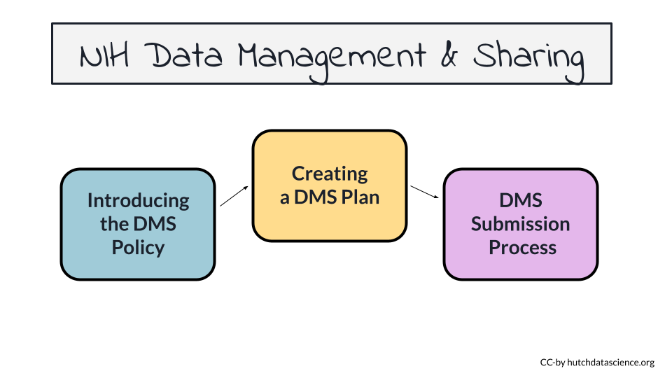

NIH Data Management and Sharing Policy
November 02, 2022
About this Course
The National Institutes of Health (NIH) is rolling out a new policy for the management and sharing of scientific data starting for (most) grants submitted January 25, 2023 or later.
The main requirement of this new policy is that researchers include a Data Management and Sharing (DMS) plan with their proposal. Not all research will require data sharing. However, everyone must provide a justification if they can’t share their data.
Once a DMS plan is accepted by the funding agency, the researchers will be required to carry out the plan. However, updates can be made to the plan as well during the Just-in-Time process.
In this course we will describe what the new policy requires, places where you might want to share your particular kind of data, and how to deal with possible challenges associated with the policy.

0.1 Motivation
Navigating the new NIH Data Management and Sharing Policy - https://sharing.nih.gov/ - can be confusing. We want to help make the process of compliance with this new policy easier.
0.2 Target Audience
The course is intended for anyone who plans to submit a grant proposal to the NIH after January 25th, 2023.
0.3 Curriculum
The course will cover:
- Motivations behind the new policy
- Overview of the new policy requirements and how it may affect you
- Suggestions about where to share your data
- Recommendations about how to budget for your data
- Guidance about how to write a DMS plan
- Information on how to submit the DMS plan to funding agencies
- Guidance on how to update a DMS plan after submission or funding
- General tips and frequently asked questions